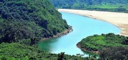
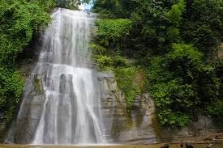
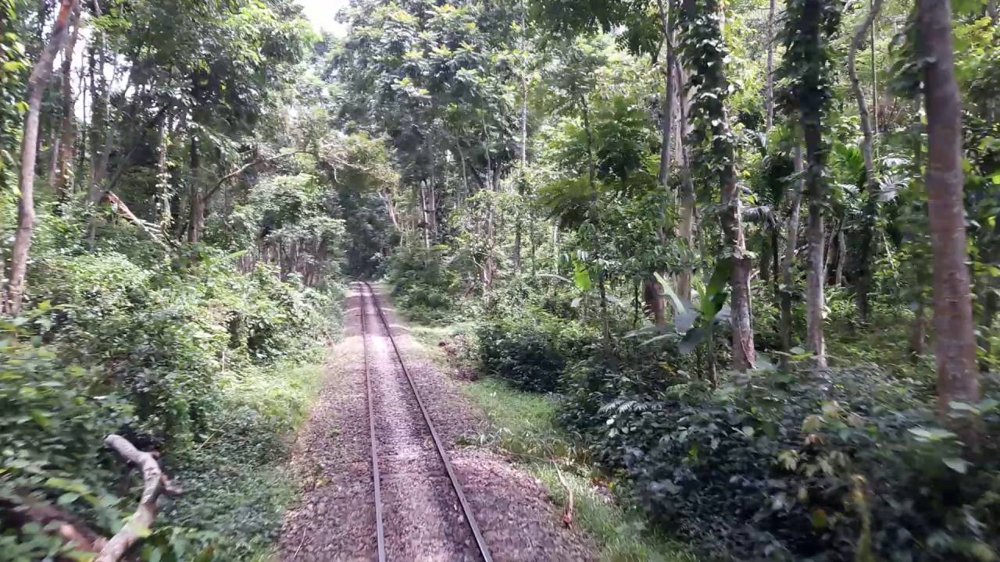
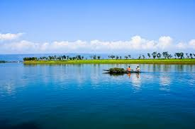

Welcome to shylet
Sylhet /s?lh?t/, also known as Jalalabad, is a metropolitan city in northeastern Bangladesh. It is the administrative seat of Sylhet Division. The city is located on the right bank of the Surma River in northeastern Bengal. It has a subtropical climate and lush highland terrain. The city has a population of more than 479,837 residents.[5] Sylhet is one of Bangladesh's most important spiritual and cultural centers. It is one of the most important cities of Bangladesh, after Dhaka and Chittagong because due to its importance to the country's economy, as well as its status as a tourist destination. The city's dargahs, or burial sites of Muslim saints, draw several thousand devotees each year.
Other places in shylet
-  As of the 1991 Bangladesh census, Srimangal has a population of 230,889. Males constitute 51.76% of the total population, are female
-  Lauachara is situated in Shylet and is one of the finest tourism spot in Bangladesh.
-  Hakaluki Haor is a marsh wetland ecological system of North-Eastern Bangladesh.[1] It is one of Bangladesh's largest and one of Asia's larger marsh wetland resources
Jaflong
Jaflong is a hill station and popular tourist destination in the Division of Sylhet, Bangladesh. It is located in Gowainghat Upazila of Sylhet District and situated at the border between Bangladesh and the Indian state of Meghalaya, overshadowed by subtropical mountains and rainforests. Jaflong is famous for its stone collections and is home of the Khasi tribe